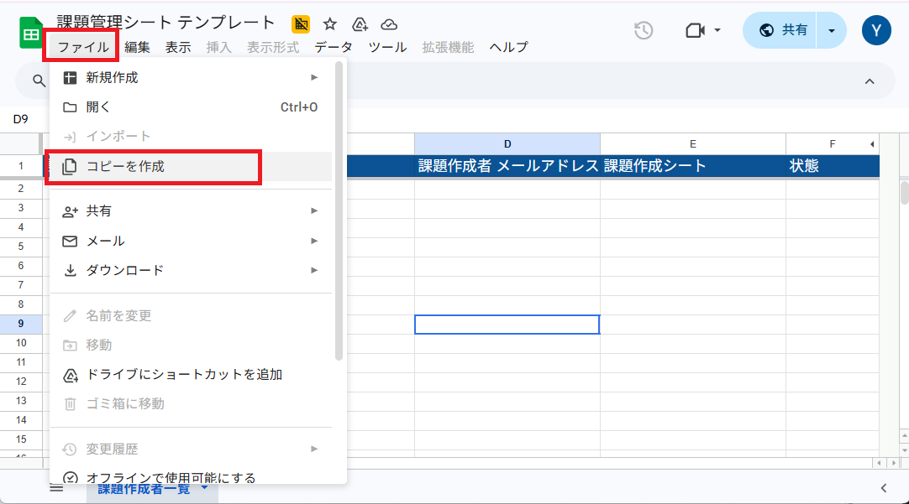

はじめに
sAItenについて
このシステムは、GoogleスプレッドシートとGoogleフォームを利用して、記述式の小テストの出題とAIによる採点、および採点結果のスコアとコメントを返却するまでの、一連の過程を自動かつ即時に行うものです。
主な目的は、教員の負担を抑えながら、学生の理解度を日常的に確認するための記述式小テストを、円滑に実施できるようにすることです。
テンプレートファイル
sAItenを利用するためのテンプレートファイルを以下に用意しています。
sAItenは、個人で運用するケースと、組織的に運用するケースの２通りを想定しています。
個人で運用する場合は、【課題作成シート】を、組織運用の場合は【課題管理シート】を使用します。
| テンプレート名 | リンク |
|---|---|
| 課題作成シート | こちら |
| 課題管理シート | こちら |
リンク先を開いたら、上部のメニューから「ファイル」→「コピーを作成」を選択して、テンプレートのコピーを自分のGoogleドライブに保存してください。

GoogleDriveに専用のフォルダを作成してコピーすると、後で生成されるファイルの管理が容易になります。
Gemini API Keyの取得
sAItenはGemini APIを使用してAIによる採点を行います。そのため、事前にGemini API Keyを取得する必要があります。
API Keyの取得手順は以下の通りです。
1. Google AI Studioにアクセスします。
2. 「API Key」タブを選択し、新しいAPI Keyを作成します。
3. 作成したAPI Keyをコピーして、保管してください。
※ API Keyは無償で取得できますが、無償版にはかなり厳しい使用制限があるため、必要に応じて有償版の利用も検討してください。
支払い情報を入力したGoogle Projectとリンクさせる（Tier1）と、ストレスなく利用できると思います。
詳しくはこちらをご参照ください。
個人アカウントの場合は無料利用枠があるので、有償版を利用したとしても、実質無償で利用できる可能性が高いです。
※組織運用の場合、関わる教員数、学生数などに応じて、複数のキーを取得・管理が必要になることがあります。
認証
個人運用、組織運用のいずれの場合も、sAItenを利用するためには、Googleアカウントでの認証が必要です。
※将来的にGoogleの承認を得てアドイン化することも検討していますが、現状は個々のアカウントでGoogle Apps Scriptを実行していただく必要があるための制約です。
認証の手順は以下の通りです。
1. 各テンプレートファイルを開いて数秒待つ(※)と、画面上部に「sAIten」というメニュー項目が現れます
2. 「sAIten」>「設定」>「認証」を選択してください
3. 個人運用で【課題作成シート】を使用している場合、認証と同時にGemini API Keyの入力を求められます。
取得したAPI Keyを入力して、先に進んでください。
１度だけGemini AIにテストプロンプトが送られて、利用可能なキーであるかどうかチェックが入ります。
利用可能なキーであることが確認できれば、右下に「認証成功」の通知が表示されます。
4. 認証
※初回は表示までに時間がかかることがあります。
How to Use
学生への展開と集計
回答用URLの公開
【課題作成シート】の『生成ファイル一覧』タブを開いてください。
《回答用フォームURL》列に、生成されたGoogleフォームの回答用URLが、課題ごとに一覧で表示されます。
これらのURLを学生に共有することで、学生はフォームにアクセスして回答を提出できるようになります。
あるいは《QRコード》列のリンク先から生成できる画像を提示して、学生に共有してください。
AIの採点結果とコメントの確認
【課題作成シート】の『生成ファイル一覧』タブを開いてください。
《集計シート》列に、AIの採点結果とコメントが記録される集計シートへのリンクが、課題ごとに一覧で表示されます。
興味のある課題について、集計シートを開いて確認してください。